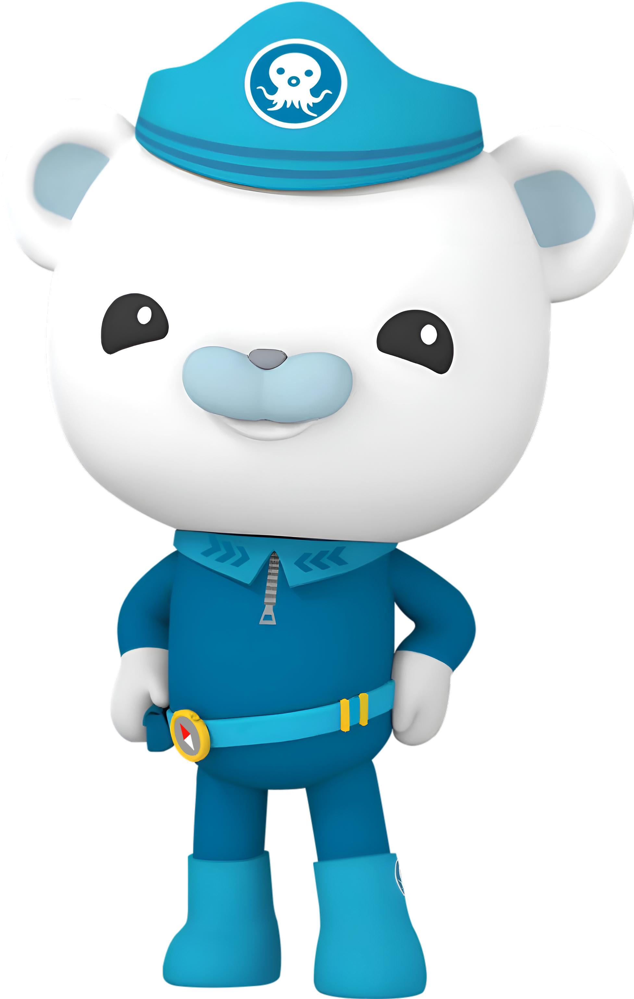

🌊 探 索 · 发 现 · 保 护 🌊
海底小分队
—— 一群勇敢的海洋探险家，驾驶章鱼堡，守护蔚蓝大海 ——
关于我们
海底小分队（Octonauts）是一支由巴克队长带领的海洋探险队伍，基地设在神秘的章鱼堡中。
队员们驾驶各种先进的舰艇，深入海洋各处，探索未知生物、救助海洋动物、保护生态环境。
本网站带你认识每一位队员，了解他们遇到的神奇海洋生物。
想了解更多官方设定？可访问
百度百科：海底小纵队外链↗。
🐙 章鱼堡与舰艇编队
- 章鱼堡（Octopod）：小分队的海底基地，形似一只巨大章鱼，内置控制室、实验室、车库和宿舍。
- 灯笼鱼艇（Gup-A）：主力舰艇，巴克队长指挥，适合常规搜救与巡航。
- 虎鲨艇（Gup-B）：呱唧驾驶，速度极快，适合追逐与紧急救援。
- 蓝鲸艇（Gup-C）：谢灵通常用，大型运输与生物观察平台。
- 魔鬼鱼艇（Gup-D）：突突兔改装，灵活穿梭珊瑚礁与狭窄水道。
- 企鹅艇（Gup-E）：皮医生专用，配备医疗舱，适合极地与浅海救援。
网站特色
- 🐻认识六位性格各异的小分队队员
- 🐋图鉴式了解神奇的海洋生物
- ✉️留言板与我们互动交流
- 🌊沉浸式海洋主题视觉设计（动态视频 + CSS 动效）
一次探险任务的流程
- 章鱼堡收到海洋生物求救信号或发现异常
- 巴克队长召集队员，分配任务与舰艇
- 队员驾驶舰艇出发，抵达目标海域
- 谢灵通进行生物观察与记录，皮医生准备医疗救援
- 完成任务后返回章鱼堡，总结经验
快速进入

队员介绍
认识巴克队长、呱唧、皮医生等六位核心队员
前往队员页 →
海洋图鉴
浏览鲸鱼、鲨鱼、水母等神奇海洋生物档案（上方为动态珊瑚礁实景）
前往图鉴页 →